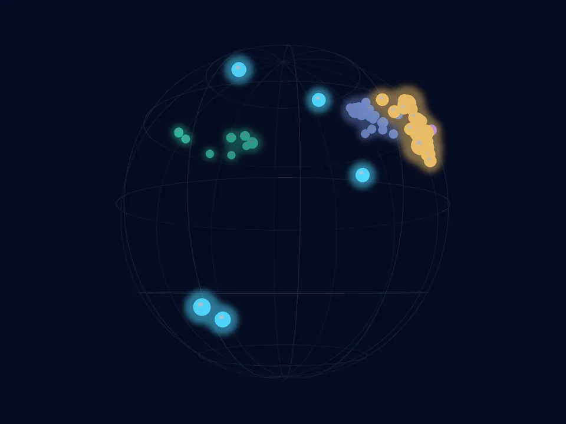

Journal of the AI Universe ✦ Events Ahead
Events ahead
114 upcoming AI events across the 50 projects, 25 November 2026 to 20 December 2026 · week of 19 October 2026 · curated by Dr.P.R.K.Varma
Every event was confirmed on its official page. Dates and details can change, so please check the official page before you travel.
Events on the globe
104 in-person or hybrid events in 63 cities. Point size is the number of events in that city. Colours follow the region. 8 online events are listed below, not on the globe. Drag to rotate. The searchable list underneath is the full programme.

November 2026
AI and Psychological Practice webinar series
📍 Online
NZCCP Wellington branch
Sessions on 3 Nov and 8 Dec (PST listing).
17 AI PsychologyOnline
CCAT International 2026
📍 Online (2 Dec hybrid, Melbourne) · Australia
Centre for Connected & Automated Transport
Three online events on 18 Nov, 25 Nov and 2 Dec.
13 AI TransportationHybrid
AI in Adult Social Care – Digital Communities of Practice webinars
📍 Online
SCIE (Social Care Institute for Excellence)
Free monthly webinars on 18 Nov and 16 Dec.
16 AI GeriatricOnline
DevSparks 2026 – Coimbatore (21 Nov) & Delhi (5 Dec)
📍 Coimbatore; Delhi · India
YourStory
Coding agents, agentic AI and GenAI developer tools.
38 AI Coding & Developer ToolsIn person🇮🇳
SPS – Smart Production Solutions 2026
📍 Nuremberg · Germany
Mesago Messe Frankfurt
Automation fair with industrial AI as a focus topic.
14 AI ManufacturingIn person
AI Securecon Summit 2026
📍 Hyderabad · India
Thinkin Events
AI-driven cybersecurity and fraud prevention for BFSI.
42 AI CybersecurityIn person🇮🇳
ET Realty & Beyond Summit Hyderabad
📍 Hyderabad (Le Méridien) · India
ET Realty
How AI, data and immersive tools are changing real estate.
46 AI Smart Cities & Real EstateIn person🇮🇳
Fragrance Innovation Summit 2026
📍 Paris · France
Fragrance Innovation Summit
How artificial intelligence is reshaping fragrance creation and consumers.
26 AI Fashion & BeautyIn person
Agentiq World Amsterdam
📍 Amsterdam (Mövenpick City Centre) · Netherlands
Agentiq World
Mastering agentic commerce together.
07 AI CommerceIn person
International Congress on AI & Digital Psychiatry 2026
📍 Online
Global Scion
Scaling mental healthcare with AI and digital psychiatry.
17 AI PsychologyOnline
WeAreDevelopers Conference India
📍 Bengaluru · India
WeAreDevelopers
Building and shipping software in the age of AI.
38 AI Coding & Developer ToolsIn person🇮🇳
CharityComms AI Conference: Leading Strategy, Building Skills
📍 Online
CharityComms
AI strategy and skills for charities.
44 AI Social ImpactOnline
EDAS 2026 – Energy Digitalisation & AI Summit
📍 New Delhi (Le Méridien) · India
EDAS
AI across the energy value chain: power, grids and renewables.
12 AI EnergyIn person🇮🇳
Infosec Reimagined
📍 New Delhi (The Shangri-La) · India
Tech Observer
CISO forum: secure AI, defend data, recover faster.
42 AI CybersecurityIn person🇮🇳
Newsrewired
📍 London · United Kingdom
journalism.co.uk
Digital-journalism conference; study tour 25 Nov.
08 AI JournalismIn person
14th FOKUS FUSECO Forum
📍 Berlin · Germany
Fraunhofer FOKUS
Towards flexible, reliable 6G and AI-based networks.
40 AI Telecom & ConnectivityIn person
SHRM India Annual Conference & Expo 2026
📍 New Delhi (Yashobhoomi) · India
SHRM India
People-led transformation where AI amplifies human capability.
19 AI Work & EmploymentIn person🇮🇳
Building a Future-Ready Bank
📍 Mumbai · India
Cedar-IBSi
Banking leaders on AI-driven decisioning and core modernisation.
05 AI FinanceIn person🇮🇳
Exploring AI: #Sound
📍 Karlsruhe (ZKM) · Germany
ZKM | Center for Art and Media
Hands-on evening: how does artificial creativity sound?
23 AI Music & ArtsIn person
Future Ready Executive Lab: AI & the Future of Work
📍 Paris · France
HEC Paris Executive Education
In-class executive session (8:30 am).
19 AI Work & EmploymentIn person
India Brand Summit 2026
📍 Delhi · India
IndianTelevision.com
Brand CXOs, agencies and AI labs; 4th edition.
28 AI Marketing & AdvertisingIn person🇮🇳
NAFCON 2026 – Reimagining NBFCs with AI
📍 Chennai (Westin) · India
NAFCON
22nd edition: 'From Data to Decisions'.
05 AI FinanceIn person🇮🇳
TA Tech Summit 2026
📍 Hyderabad · India
TA Dialogues
AI in talent acquisition, with live demos of AI hiring tools.
19 AI Work & EmploymentIn person🇮🇳
The Leaders Meet – Marketing Edition
📍 Pune (MCCIA) · India
The Leaders Meet
AI-powered marketing: from tools to strategy.
28 AI Marketing & AdvertisingIn person🇮🇳
(UN)REAL AI Film Festival
📍 Turin (Feat. House) · Italy
(UN)REAL AI Film Festival
Entries close 31 Oct; finalists announced 14 Nov.
01 AI FilmmakingIn person
AI Music Lab: generative models, lyrics and creative processes
📍 Madrid (UAX) · Spain
Universidad Alfonso X el Sabio
Human–machine co-creation in music.
23 AI Music & ArtsIn person
AITHE 2026 – AI in Tourism & Hospitality Innovation
📍 Valletta, Malta and online
CTIAR Conferences
Responsible, scalable, human-centred AI in tourism.
TAIG 2026 – Technologies for AI Governance
📍 Hong Kong (Cordis) or online
Lingnan University School of Data Science
International workshop; registration closes 20 Nov.
43 AI GovernanceHybrid
Factory Automation Expo 2026
📍 Pune (PIECC, Moshi) · India
Factory Automation Expo
Robotics, AI, IoT and smart-manufacturing solutions.
14 AI ManufacturingIn person🇮🇳
LEVEL UP Sports Tech Innovation Expo 2026
📍 Dubai Harbour · United Arab Emirates
Gludo
Athlete performance tech, AI, smart stadiums and fan engagement.
20 AI Sports & FitnessIn person
14th Annual Digital Marketing Summit 2026
📍 Hyderabad · India
Digital Marketing Summit
Panels include 'The AI Native Marketer'.
28 AI Marketing & AdvertisingIn person🇮🇳
RSNA 2026
📍 Chicago (McCormick Place) · United States
Radiological Society of North America
Annual meeting with an AI Showcase of AI-powered imaging solutions.
04 AI HealthcareIn person
Agentic AI and Foundation Models Workshop
📍 Kaiserslautern · Germany
Fraunhofer ITWM
Register by 16 Nov.
37 AI Foundation Models & AssistantsIn person
AI Dev 26 NYC
📍 New York (Chelsea Piers) · United States
DeepLearning.AI
Developer conference on building with AI.
38 AI Coding & Developer ToolsIn person
AI4BCI 2026 – AI for Brain–Computer Interface
📍 Manchester (University of Manchester) · United Kingdom
AI4BCI
First international symposium on AI for BCI.
33 AI NeuroscienceIn person
Tech for Retail 2026
📍 Paris (Paris Expo Porte de Versailles) · France
Tech for Retail
European retail show; how agentic AI transforms head offices and stores.
07 AI CommerceIn person
The Future of Sustainable Computing
📍 Heidelberg · Germany
HITS
Symposium on sustainable computing and AI.
34 AI EnvironmentIn person
ALTA 2026
📍 Melbourne · Australia
Australasian Language Technology Association
Tutorials 30 Nov; main conference 1–2 Dec.
25 AI Languages & TranslationIn person
XR Kaigi 2026
📍 Tokyo (Port City Takeshiba) · Japan
Mogura
Japan's largest XR conference, featuring AI and smart-glasses case studies.
41 AI Consumer Devices & WearablesIn person
NVIDIA GTC Washington, D.C.
📍 Washington, D.C. · United States
NVIDIA
Workshops 30 Nov; conference & expo 1–3 Dec; keynote 1 Dec.
37 AI Foundation Models & AssistantsIn person
AWS re:Invent 2026
📍 Las Vegas · United States
Amazon Web Services
Cloud and AI's biggest week.
39 AI Cloud & Data CentresIn person
ECQCM'26 – Machine Learning for Quantum
📍 Strasbourg (ISIS, University of Strasbourg) · France
Quantum Excellence
European conference on quantum and complex matter with ML.
35 AI Quantum ComputingIn person
December 2026
AMIW 2026 – Asian Music Intelligence Workshop
📍 Melbourne (ACML 2026 satellite) · Australia
AMIW
Music and machine learning, including music generation.
23 AI Music & ArtsIn person
Generative AI Summit London
📍 London (InterContinental O2) · United Kingdom
AI Accelerator Institute
Applied-AI builders and executives.
37 AI Foundation Models & AssistantsIn person
Artificial Intelligence in Education Conference
📍 Online
Magna Publications (The Teaching Professor)
Virtual conference; on demand until 2 Mar 2027.
18 AI EducationOnline
FinTech Connect 2026
📍 London (ExCeL) · United Kingdom
FinTech Connect
Includes an Applied AI in Finance track.
05 AI FinanceIn person
Humanoids Summit Silicon Valley
📍 Silicon Valley · United States
Humanoids Summit
Sixth summit for humanoid and physical-AI builders and researchers.
11 AI RoboticsIn person
Legal AI London
📍 London · United Kingdom
Inside Practice
Responsible AI, governance and scale in law firms and in-house teams.
06 AI Law & InvestigationIn person
MERe AI 2026 – Machine Ethics and Reasoning in AI
📍 Toronto (Vector Institute); day 1 streamed · Canada
MERe AI workshop
Second workshop on machine ethics and moral reasoning.
45 AI Ethics & SafetyHybrid
InGARSS 2026
📍 Hyderabad · India
IEEE Geoscience & Remote Sensing Society (India)
Digital Earth: geoscience, space, remote sensing and AI.
31 AI Space & CosmosIn person🇮🇳
MLESP 2026 – Machine Learning for EEG Signal Processing
📍 Dallas and hybrid · United States
IEEE BIBM workshop
7th workshop on ML for EEG.
33 AI NeuroscienceHybrid
The Ethics of AI in Therapy
📍 Online (live webinar)
PESI
Latest guidelines and best practices for clinicians.
17 AI PsychologyOnline
DefenseTech Week 2026
📍 Tel Aviv University · Israel
Blavatnik ICRC, Tel Aviv University
Autonomous systems and AI-driven warfare, defence start-ups.
03 AI DefenceIn person
TiEcon Delhi 2026
📍 New Delhi (India Habitat Centre)
TiE Delhi-NCR
Founders and investors on sovereign tech, consumer scale and AI.
47 AI Startups & InvestmentIn person🇮🇳
Uncrewed & Autonomous Systems 2026
📍 London (Novotel West) · United Kingdom
ASDEvents
UGVs, UAS, robotics, counter-drone and AI-enabled capability.
03 AI DefenceIn person
AVAR 2026 Cyber Security Conference
📍 Hyderabad · India
AVAR
AI security, threat intelligence and CISO tracks.
42 AI CybersecurityIn person🇮🇳
KIPAC Gaia DR4 × Agentic AI Sprint
📍 Stanford (Gates Building) · United States
Kavli Institute for Particle Astrophysics & Cosmology
Agentic AI to decode the Milky Way with Gaia DR4.
31 AI Space & CosmosIn person
ET AI Data Center Masterclass
📍 Mumbai · India
ET Masterclass (Economic Times)
In-person masterclass on AI data-centre infrastructure.
39 AI Cloud & Data CentresIn person🇮🇳
Future of Defense Command & AI Summit – US Edition
📍 Online
Group Futurista
Free virtual summit on AI in command, wargaming and decision support (10:00 ET).
03 AI DefenceOnline
Catholic Universities in the Age of Artificial Intelligence
📍 Rome (Pontifical University of the Holy Cross) · Italy
International Federation of Catholic Universities (FIUC)
International conference; audience with the Pope on 5 Dec.
21 AI SpiritualityIn person
AgroTech 2026
📍 Lucknow (ICAR-IISR) · India
Indian Chamber of Food and Agriculture (ICFA)
25th edition; themes include Digital Agriculture and AI Solutions, ICT, AI & Extension.
02 AI AgricultureIn person🇮🇳
CARE Conference 2026
📍 Roorkee (IIT Roorkee) · India
IIT Roorkee
AI research conference with mentoring workshop and AI challenge.
30 AI Research & InnovationIn person🇮🇳
CSICON 2026
📍 Bengaluru (Palace Grounds) · India
Cardiological Society of India
CSI annual conference with an AI in Cardiology track and special session.
04 AI HealthcareIn person🇮🇳❤️
RULIC 2026: Libraries in the AI Era – Digital Humanities and Civilizational Heritage
📍 Sonipat (Rishihood University) · India
Rishihood University
3rd international library conference on AI and heritage.
22 AI MythologyIn person🇮🇳
GenTO Film Festival
📍 Toronto (Innis Town Hall) · Canada
GenTO
Inaugural edition: short films, panels, demos and awards for AI-era cinema.
01 AI FilmmakingIn person
JIFF 1st World AI Cinema Competition – final entry deadline
📍 Jaipur · India
Jaipur International Film Festival (JIFF)
Final submission deadline (extended deadline 15 Nov); JIFF runs 8–12 Jan 2027.
01 AI FilmmakingIn person🇮🇳
Blue Intelligence Climate Summit 2026
📍 Visakhapatnam · India
Blue Intelligence Climate Summit
AI, SDGs, climate action and the blue economy.
34 AI EnvironmentIn person🇮🇳
ML4H 2026 Symposium
📍 Sydney · Australia
ML4H (Machine Learning for Health)
6th symposium on machine learning for health.
04 AI HealthcareIn person
NeurIPS 2026
📍 Sydney (ICC); satellites in Atlanta & Paris 9–13 Dec · Australia
NeurIPS Foundation
40th flagship machine-learning conference.
30 AI Research & InnovationIn person
MFSS Sustainability Conclave 2026 (SUSTAIN-AI hackathon)
📍 Indore (IIT Indore) · India
IIT Indore
AI for a Sustainable India hackathon and conclave.
34 AI EnvironmentIn person🇮🇳
New Friends 2026 – Social Robotics & HRI
📍 Chennai · India
PAIR Labs, Bharath Institute of Higher Education and Research
International conference on social robotics and human–robot interaction.
11 AI RoboticsIn person🇮🇳
On-Device AI Builders Hackathon
📍 New York (NYU) · United States
LM Studio with Snapdragon & Microsoft
Local-LLM building on Snapdragon AI PCs.
41 AI Consumer Devices & WearablesIn person
IEEE-RAS Humanoids 2026
📍 Santa Clara, California · United States
IEEE Robotics and Automation Society
25th International Conference on Humanoid Robots.
11 AI RoboticsIn person
T-AIFF 2026 – Türkiye International AI Film Festival
📍 Istanbul · Türkiye
T-AIFF
3rd edition; film submissions via FilmFreeway until 1 Nov.
01 AI FilmmakingIn person
UnitedXR Europe 2026
📍 Brussels · Belgium
UnitedXR
XR conference and expo, from AI infrastructure to AR cloud and optics.
29 AI Gaming & Immersive WorldsIn person
Computer Science Education Week 2026
📍 Worldwide
CSEdWeek
Theme: how CS powers AI innovation.
15 AI KidsVarious
IndiaJoy AI Film Festival & AI Conclave
📍 Hyderabad (Bharat Future City) · India
IndiaJoy
Week-long festival and conference on AI in film, part of IndiaJoy.
01 AI FilmmakingIn person🇮🇳
AI Ethics in Action: Real-World Clinical Decisions
📍 Online (Zoom)
The Ferentz Institute
Clinical ethics training, 8:45 am–12 pm ET.
17 AI PsychologyOnline
Black Hat Europe 2026 – AI Security Summit
📍 London (ExCeL) · United Kingdom
Black Hat
One-day AI security summit within Black Hat Europe (7–10 Dec).
42 AI CybersecurityIn person
MORS Emerging Techniques Forum 2026
📍 Arlington, VA · United States
Military Operations Research Society
Theme: AI for the operations research community.
03 AI DefenceIn person
Q2B26 Chicago Quantum Technologies Conference
📍 Chicago (Marriott) · United States
QC Ware
Quantum industry conference; case studies due 6 Nov.
35 AI Quantum ComputingIn person
TC47 – Translating and the Computer
📍 Luxembourg
AsLing
Translation technology, MT and LLMs.
25 AI Languages & TranslationIn person
Financial Services AI Security Forum
📍 New York (Hilton Midtown) · United States
The Cyber Finance Forum
Trust, risk and resilience in the age of AI.
05 AI FinanceIn person
HoT Europe 2026 – Hotel Operations & Technology
📍 Barcelona · Spain
PG Solutions
Automation and AI-driven guest experiences in hotels.
27 AI Travel & HospitalityIn person
The AI Summit New York 2026
📍 New York (Javits Center) · United States
The AI Summit
Turning AI ambition into real-world impact.
50 AI Future FrontiersIn person
Auto EV Bharat 2026
📍 Bengaluru (KTPO, Whitefield) · India
Auto EV Bharat
Automotive and EV tech expo, from AI to electrification.
13 AI TransportationIn person🇮🇳
Automation Expo North 2026
📍 New Delhi (Pragati Maidan) · India
Industrial Automation India
Industrial AI, IIoT and connected operations.
14 AI ManufacturingIn person🇮🇳
IEEE STAR 2026
📍 Rovereto, Italy
IEEE
Sport technology and research, including AI for sport.
20 AI Sports & FitnessIn person
SEMICON Japan 2026
📍 Tokyo (Tokyo Big Sight) · Japan
SEMI
Semiconductor exhibition with AI × humanoids showcase.
36 AI SemiconductorsIn person
ET EDNXT Chennai
📍 Chennai (Hilton) · India
ET Education
10th edition of the AI-and-education conference series.
18 AI EducationIn person🇮🇳
Molsoft India UGM – ACCDD 2026
📍 Bengaluru · India
Advent Informatics / Molsoft
Computational drug discovery with AI/ML experts.
32 AI BiotechnologyIn person🇮🇳
AI Governance & Liability Conference
📍 Singapore (NUS Law)
NUS Centre for TRAIL
Technology, law and AI liability.
43 AI GovernanceIn person
Tackling Climate Change with Machine Learning (NeurIPS workshop)
📍 Sydney · Australia
Climate Change AI
NeurIPS 2026 workshop.
34 AI EnvironmentIn person
NIELIT Bio-AI Conclave 2026
📍 Guwahati (Gauhati University) · India
NIELIT
India's Bio-AI roadmap; workshops on 10 Dec.
32 AI BiotechnologyIn person🇮🇳
AI & Science: Evolution or Extinction? (NeurIPS workshop)
📍 Atlanta (NeurIPS satellite) · United States
AISCIK workshop organisers
Safety, alignment and evaluation for AI in science.
48 AI AGI & ASIIn person
REO-2 – Representation Learning for Earth Observation (NeurIPS workshop)
📍 Paris (NeurIPS satellite) · France
REO workshop organisers
EO foundation models and multimodal satellite data.
31 AI Space & CosmosIn person
AI Horizons Forum
📍 San Francisco (Marriott Marquis) · United States
AI Horizons Forum
Coordinating people working on transformative AI (by application).
48 AI AGI & ASIIn person
ICAST 2026 – Advanced Semiconductor Technologies
📍 Chennai (ICSR Building, IIT Madras) · India
SCSVMV (Kanchi University) with IIT Madras
Themes include AI and sustainable chip making; abstracts due 25 Oct.
36 AI SemiconductorsIn person🇮🇳
CODS-COMAD 2026
📍 Gandhinagar (DA-IICT) · India
ACM India (IKDD)
Joint data science and data management conference.
30 AI Research & InnovationIn person🇮🇳
IEEE QAI 2026 – Quantum Artificial Intelligence
📍 Nottingham · United Kingdom
IEEE / Nottingham Trent University
Second international conference on quantum AI.
35 AI Quantum ComputingIn person
AI in Sport (short programme)
📍 Lausanne · Switzerland
AISTS
Two-day course on responsible AI adoption in sport; CHF 1,400.
20 AI Sports & FitnessIn person
Cardiology Update London 2026
📍 London · United Kingdom
Zurich Heart House
Includes 'AI in Cardiovascular Medicine': AI stethoscopes, AI-ECG and HF management with AI.
04 AI HealthcareIn person❤️
TiE Global Summit 2026 – The Next Decade
📍 Indore · India
TiE Global
Arenas on applied AI, agentic workflows and capital.
47 AI Startups & InvestmentIn person🇮🇳
WADLA 5.0 – Workshop on Advances in Deep Learning and Applications
📍 Prayagraj (IIIT Allahabad) · India
IIIT Allahabad
Five-day research workshop with hands-on deep-learning sessions.
18 AI EducationIn person🇮🇳
Winter School on AI, Ethics and Human Rights
📍 Rome and online · Italy
UNICRI
UN institute's advanced course on responsible AI.
45 AI Ethics & SafetyHybrid
Techfest IIT Bombay: Artificial Intelligence Workshop
📍 Mumbai (IIT Bombay) · India
Techfest, IIT Bombay
Two-day AI workshop; register by 6 Dec.
18 AI EducationIn person🇮🇳
Generative Art 2026
📍 Cagliari (University Library) · Italy
Generative Art conference
Theme: Generative Art & AI uniqueness.
23 AI Music & ArtsIn person
AIFB 2026 – AI for Forensics and Biometrics
📍 Dharwad (IIT Dharwad) · India
IIT Dharwad
Biometrics, deepfake and media forensics, AI-assisted investigation.
06 AI Law & InvestigationIn person🇮🇳
IEEE ICRM 2026 – Robotics and Mechatronics
📍 Amritapuri, Kerala · India
Amrita Vishwa Vidyapeetham
2nd IEEE International Conference on Robotics and Mechatronics.
11 AI RoboticsIn person🇮🇳
SPELLL 2026 – Speech & Language Technologies for Low-Resource Languages
📍 Coimbatore (Amrita Vishwa Vidyapeetham) and hybrid · India
Amrita Vishwa Vidyapeetham
Language AI for low-resource languages.
25 AI Languages & TranslationHybrid🇮🇳
PIFFI 2026 – People's International Film Festival of India
📍 Bhopal · India
PIFFI
1st edition, with an AI-Assisted Films category.
01 AI FilmmakingIn person🇮🇳
SGCNSP 2026 – Signal Processing for Wireless Communication & Networking
📍 Warangal (Vaagdevi Engineering College) · India
SGCNSP
Includes AI for wireless networking; papers due 15 Nov.
40 AI Telecom & ConnectivityIn person🇮🇳
IEEE INDICON 2026
📍 Chennai (Sri Sairam Engineering College) · India
IEEE India Council
Theme: Net-Zero Cyber-Physical Intelligence – AI, 6G & sustainable electronics.
10 AI EngineeringIn person🇮🇳
IndoML 2026
📍 Kolkata (IIT Kharagpur Kolkata Extension Centre) · India
IIT Kharagpur with BITS Pilani APPCAIR
Machine-learning symposium; this year’s focus is responsible AI.
30 AI Research & InnovationIn person🇮🇳
No events match these filters. Try a different spelling, or clear a filter.
Source: the weekly Events Ahead research log (2026-10-19). Events that have already ended are removed automatically.